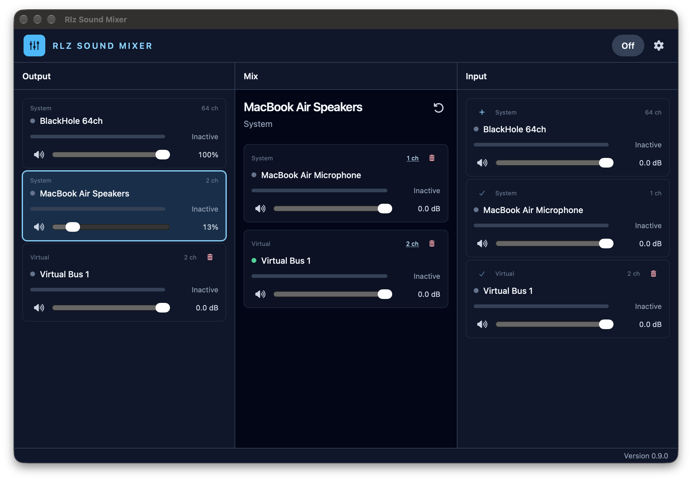
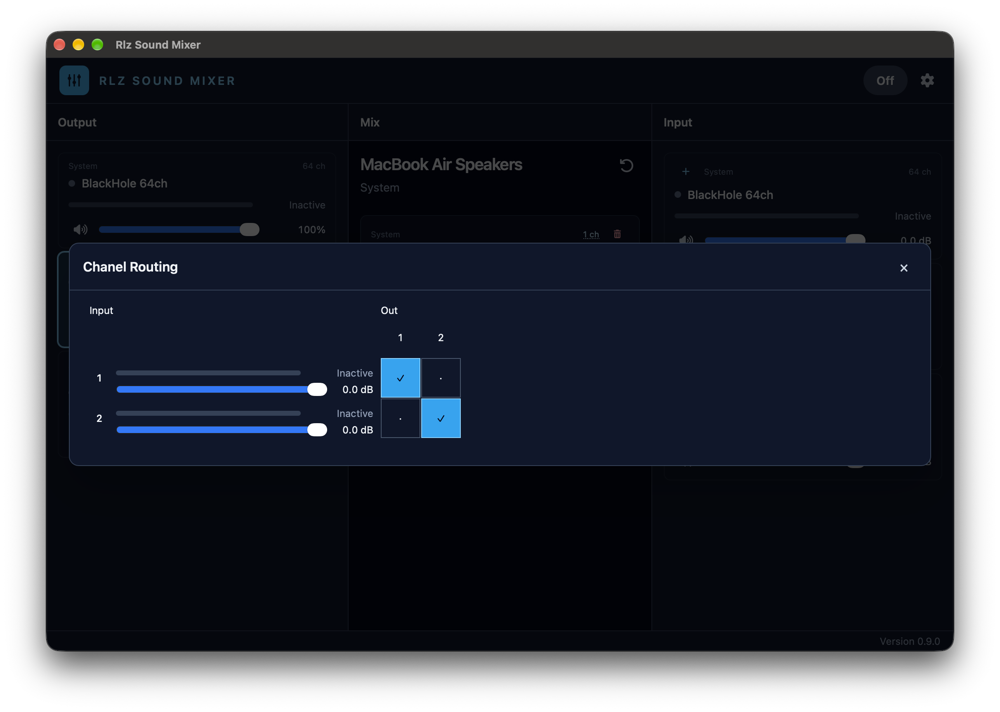
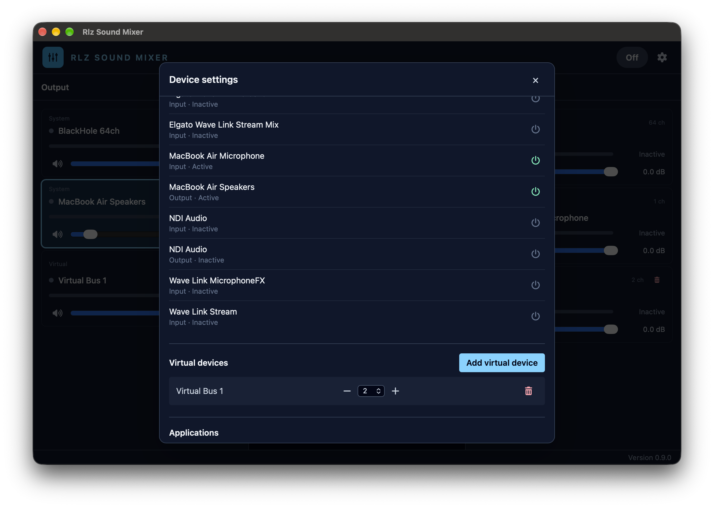

Choose audio sources
Use physical input devices, eligible running applications, and internal virtual buses as mix sources.
macOS audio routing
A desktop app for routing and balancing sound from input devices and individual applications to physical audio outputs.
Release links will be updated when a new app version is published.
Application
The full application window in three states: the main mixer, channel routing, and device settings.



What it does
Use physical input devices, eligible running applications, and internal virtual buses as mix sources.
Balance sources independently for each destination. View signal meters and route channels where supported.
Create a virtual bus inside the app and add its mix to another destination. It is not a macOS system device.
System requirements
Get the app
Download the current release from GitHub.